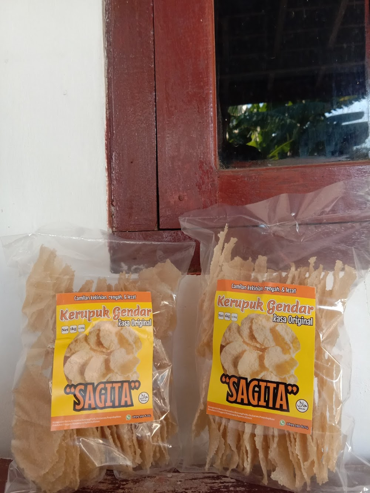

Kegiatan & Agenda Masyarakat
Dokumentasi dan catatan rangkaian aktivitas dinamis warga serta jajaran pemerintah Kelurahan Karanganom.

Pemberdayaan keripik singkong
📅 25 Mei 2026
Kegiatan ini merupakan inisiatif Pemerintah Kelurahan Karanganom untuk meningkatkan daya saing pelaku usaha mikro di wilayah tersebut. Fokus utamanya adalah transformasi digital bagi para pelaku usaha, khususnya di sektor kuliner (seperti kerupuk gendar/keripik singkong) dan kerajinan tangan.

Gotong Royong Bersih Desa dan Mitigasi Lingkungan
📅 17 Mei 2026
Meningkatkan kesadaran akan kebersihan lingkungan, warga dari berbagai RW serentak melaksanakan aksi kerja bakti membersihkan saluran air utama dan fasilitas publik. Kegiatan berkala ini bertujuan untuk mencegah luapan air di musim hujan sekaligus mempererat kerukunan antar warga.
Pagelaran Wayang Kulit Tradisi Bersih Desa
📅 22 Maret 2026
Dalam rangka melestarikan adat istiadat leluhur (nguri-uri budaya), Pemerintah Kelurahan Karanganom bersama masyarakat sukses menggelar pergelaran wayang kulit semalam suntuk. Kegiatan yang diadakan bertepatan dengan tradisi Bersih Desa dan Sadranan ini menjadi sarana hiburan rakyat sekaligus ruang silaturahmi untuk mempererat kebersamaan.